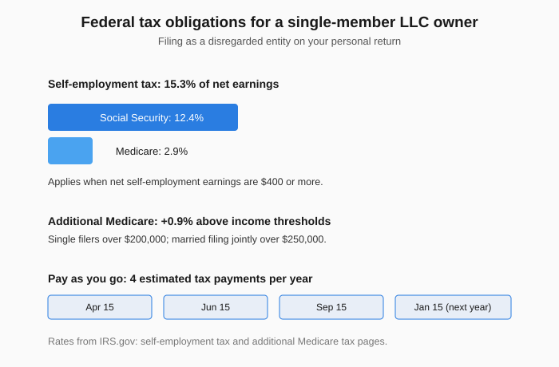

Single-Member LLC Taxes: What You File and What You Pay
The short version
TL;DR: For federal income tax, a single-member LLC is a "disregarded entity," which means the IRS doesn't collect a separate LLC tax. Your profit flows straight onto your own Form 1040 through Schedule C, just like a sole proprietor. You pay income tax on that profit plus self-employment tax of 15.3% (Social Security and Medicare) on net earnings of $400 or more. You generally pay as you go through four quarterly estimated tax payments, and you may need an employer identification number (EIN) even though you file under your own Social Security number.Last updated: 2026-08-14. Prices and details verified against official sources.
If you just formed a single-member LLC, one of the first surprises is that the government you deal with most is the IRS, not just your state. The LLC protects your personal assets, but it does not create a separate income tax bill. Understanding the mechanics early saves you from a painful surprise at filing time.
Why is a single-member LLC "disregarded" and what does that mean?
The IRS treats an LLC as a "check-the-box" entity. A domestic LLC with one member is treated as disregarded as separate from its owner for federal income tax purposes (IRS guidance on single-member LLCs).from its owner for income tax purposes, unless it files Form 8832 and elects to be taxed as a corporation, per the IRS page on single-member LLCs.
Disregarded is not the same as invisible. It means the tax code ignores the LLC as its own taxpayer, not that you ignore the LLC. For income tax, the business shows up on your personal return, normally on Schedule C (Form 1040). There is a key wrinkle: for employment tax and certain excise taxes, the LLC is still a separate entity. If you hire employees, the LLC reports and pays employment taxes under its own name and EIN.
Do I file a separate tax return for my single-member LLC?
No. A single-member LLC does not file a separate federal income tax return the way a corporation or multi-member LLC does. The owner reports the business on their own return using Form 1040 and Schedule C, so there is no Form 1120 or Form 1065. Your profit or loss lands on Schedule C and flows into your Form 1040. From a tax standpoint you are effectively a sole proprietor, even though the LLC gives you separate legal liability protection.
What is self-employment tax for a single-member LLC owner?
This is the line that trips up most first-time founders. Just because you have an LLC does not mean you skip Social Security and Medicare. Your net self-employment earnings are taxed the same way a sole proprietor's are.
You owe self-employment tax if net earnings were $400 or more. The rate is 15.3% - 12.4% for Social Security and 2.9% for Medicare - figured on Schedule SE (Form 1040) on top of your regular income tax.
There are limits worth knowing. For 2024, the first $168,600 of combined wages and net self-employment earnings is subject to the Social Security part, and that figure rises most years. Above it, you stop paying the 12.4% slice but keep paying 2.9% Medicare on all of it. High earners owe an extra 0.9% Medicare tax above $200,000 for single filers or $250,000 for married filing jointly.

The silver lining is that you can deduct the employer-equivalent half of your self-employment tax when you figure your adjusted gross income. Wage earners cannot deduct their Social Security and Medicare withholding, but self-employed people can deduct roughly half of the 15.3%. This deduction cuts your income tax, not your self-employment tax itself.
How do I pay income tax and self-employment tax during the year?
Taxes are pay-as-you-go. If you are in business for yourself, you generally must make estimated tax payments during the year instead of settling up in April. The IRS divides the year into four payment periods, and you generally must pay if you expect to owe $1,000 or more when you file. You figure the amount with the worksheet in Form 1040-ES, using prior year numbers as a starting point.
The standard due dates are:
- April 15, for income earned January 1 through March 31
- June 15, for income earned April 1 through May 31
- September 15, for income earned June 1 through August 31
- January 15 of the following year, for income earned September 1 through December 31
If a date lands on a weekend or legal holiday, the payment shifts to the next business day. You can pay online, by phone, or through the IRS2Go app.
What happens if I do not pay enough estimated tax?
The IRS charges a penalty for underpaying estimated tax, and a late payment is penalized even if you are due a refund. Most taxpayers dodge the penalty if they owe less than $1,000 after withholding and credits, or if they paid at least 90% of the current year's tax, or 100% of the prior year's tax, whichever is smaller. If income arrives unevenly, you can annualize it and make unequal payments, then document it on Form 2210.
Can a single-member LLC elect to be taxed as a corporation?
Yes, but only if you affirmatively choose it. An eligible entity files Form 8832, Entity Classification Election, to elect how it is classified: as a corporation, a partnership, or an entity disregarded as separate from its owner.
Taking the corporate election changes everything. Instead of a simple Schedule C pass-through, you face corporate filings, payroll duties, and more complex return obligations. Many owners instead weigh an S corporation election, which can reduce self-employment tax on a reasonable salary, but that analysis deserves its own deep dive.
When to: talk to a tax professional before filing Form 8832. It is a real decision with ongoing obligations, not a light switch.
Does a single-member LLC need an EIN?
Often yes, but not always. For income tax, a disregarded-entity single-member LLC generally uses the owner's Social Security number or EIN on information returns. If a bank needs a Form W-9, you list the owner's SSN or EIN, not the LLC's EIN.
The LLC needs its own EIN if it has employees or files certain excise tax forms. Most new single-member LLCs also get one to open a business bank account or because state law requires it. You apply with Form SS-4.
What should I file, and when, as a single-member LLC?
Here is the short filing checklist for a typical single-member LLC:
- EIN (if needed): Apply with Form SS-4 early, especially to open a business bank account.
- Estimated tax payments: Pay quarterly using Form 1040-ES by April 15, June 15, September 15, and January 15.
- Schedule C (Form 1040): Report business income and expenses; the profit flows into your personal return.
- Schedule SE (Form 1040): Figure self-employment tax on net earnings of $400 or more, at 15.3%.
- Form 8832 (only if electing corporate treatment): File only if you want to be taxed as a corporation instead of a disregarded entity.
Keep clean records of every business expense and payment from the start. When estimated taxes, Schedule C, and Schedule SE all pull from the same numbers, good bookkeeping makes the whole process smoother.
FAQ
Q: Do I pay taxes on all my LLC income?
A: You pay income tax on taxable profit, not gross revenue. You deduct allowed business expenses first, so Schedule C shows profit or loss, not everything that came in.
Q: What is the self-employment tax rate for 2026?
A: The self-employment tax rate is 15.3% — 12.4% Social Security and 2.9% Medicare. The wage base adjusts yearly; the IRS published $168,600 for 2024, so confirm the current limit.
Q: Can my LLC reduce my self-employment tax?
A plain single-member LLC does not cut self-employment tax by itself. Electing S corporation treatment can change how salary versus distributions are taxed, but that is a separate decision to discuss with a tax professional.
Q: Is a single-member LLC better taxed than a sole proprietorship?
A: For federal income tax, they are treated the same way: both report on Schedule C and both pay self-employment tax. The LLC's advantage is legal liability protection, not a tax rate break.
Q: Is it too late to make estimated tax payments if I already missed one?
A: No. Catch up as soon as you can. The penalty is based on unpaid amounts for each period, and paying late still beats not paying, so make the payment promptly and adjust your next vouchers.
Q: Should I file Form 8832 to become a corporation?
A: Only after weighing the trade-offs with a tax advisor. The election adds corporate filing and payroll duties, and it is not reversible casually. Most single-member LLCs stay disregarded entities.